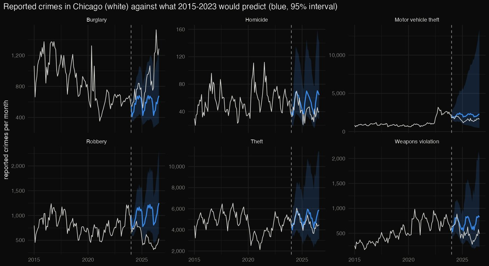
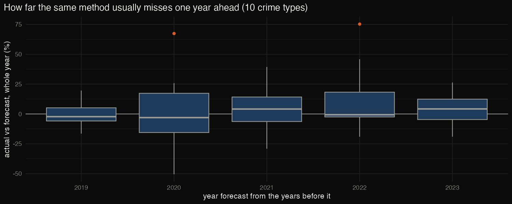
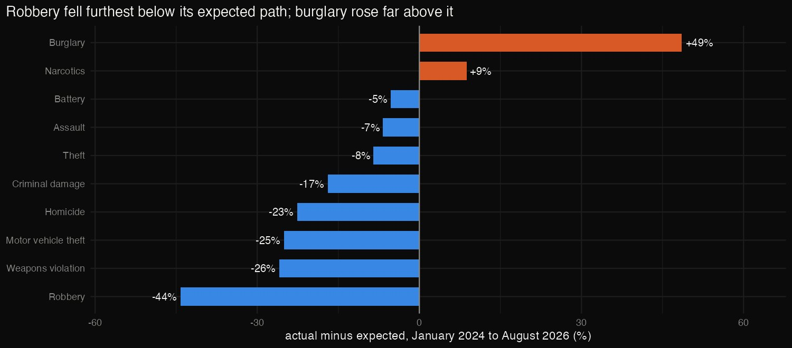

R · Time-series forecasting · 2026-10
Is Chicago's Crime Drop Real? (R)
An R forecasting check: for ten crime types, how far Chicago's reported crime from January 2024 to August 2026 sits from what its own 2015-2023 history predicts, and whether that gap is bigger than the method's usual error.

These are reported crimes: reporting, recording and classification can change as well as crime. The analysis measures the size of the change, not its causes.
01 — The problem
Chicago reported far fewer robberies, shootings and homicides in 2024–2026, and the city, the police and the press all point to the drop. But crime swings from year to year, and a fall after an unusually bad year can be ordinary regression to the mean.
For each crime type, how far is the recent period from what the city's own history would predict, and is that gap bigger than a forecast usually misses by?
02 — What I built
An R analysis of 2,930,154 reported incidents (January 2015 – September 2026) from Chicago's open data:
- Server-side counting: monthly counts by crime type, aggregated by the API itself, plus an independent daily pull to check them.
- Forecasts: ETS and ARIMA models (the
forecastpackage) fitted to 2015–2023, projecting an expected path with 95% intervals for January 2024 to August 2026. - Backtests: the same method forecasting each of 2019–2023 from the years before it, to calibrate what counts as unusual.
03 — How it was built
- 01
Let the API do the counting
Downloading 2.9 million rows to count them is wasteful. The city's Socrata API takes a
GROUP BY, so only a few thousand monthly counts come down. A second query of daily totals, summed to months, must match the first exactly, and it does for all 141 months.monthly <- get(list(`$select` = "date_trunc_ym(date) AS month, primary_type, count(*) AS n", - 02
Forecast what history predicts
For ten crime types, ETS and ARIMA models are fitted to monthly counts from 2015 to 2023. The ARIMA model works on the log scale so its intervals stay positive. The two forecasts are averaged into an expected path, and the ARIMA 95% interval shows how much a month could normally vary.
a <- forecast(auto.arima(y, lambda = 0), h = h, level = 95) # log scale keeps intervals positive - 03
Count months outside the interval, carefully
The first version reported every month above the interval for every crime, which can't be right. In
summarise(), each line sees the ones before it. Summing the actual counts first meant the 32-month total was compared with each month's bounds. Counting the months first fixed it: robbery has 23 of 32 months below its interval, and burglary 5 above.summarise(months_below_95 = sum(actual < lo95), months_above_95 = sum(actual > hi95), # before actual is summed over - 04
Calibrate with backtests
How big must a gap be to be unusual? The same method forecast each of 2019–2023 from the years before it. It typically misses a whole year by about 8% (2019) to 19% (2022), and by 24% in the pandemic year. Its 95% intervals held 57–97% of months.

04 — Results
| Jan 2024 – Aug 2026 | vs expected |
|---|---|
| Robbery | −44% |
| Weapons violation | −26% |
| Motor vehicle theft | −25% |
| Homicide | −23% |
| Burglary | +49% |
- Beyond the method's usual error: robbery, weapons violations, motor vehicle theft and homicide all fall further below their expected paths than the backtests usually miss. Robbery is the clearest case.
- Burglary went the other way: 49% above its expected path, and 48% above 2019 for the same months.
- Smaller moves for theft (−8%), assault (−7%) and battery (−5%) are within normal forecast error.
- Against 2019: January–August 2026 robbery is 40% lower and homicide 15% lower. Motor vehicle theft is double 2019, but 38% below the 2023 Kia/Hyundai theft wave.

05 — What I'd do next
- Break the gap down by community area to see where the drop happened.
- Add a comparison city, so city-specific change can be separated from national trends.
- Model the 2022–23 motor vehicle theft wave as its own event rather than part of the trend.